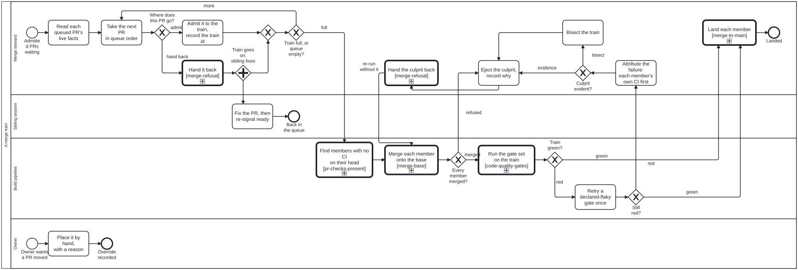

Generated from
cat-harness/processes/sdlc/merge-train.bpmnbygen-processes-viz.ts— do not edit here. All processes
Process_MergeTrain · strict · 15 step(s)
Land the ready pull requests as one train: place each by the merge-priority decision table, merge the members with merge-base, run the gate set on the combination, and on red eject the culprit rather than reject the train. A TRAIN OF PULL REQUESTS, landed together. Bean hfag (merge-pipeline epic), owner’s ruling 2026-10-02. One instance per train run, committed under beans/workflows/ like every other instance, so a sibling steward sees the same position and the run’s record is what T4 will later be tuned from (R10).
IT LINKS THE EXISTING PROCESSES AND DUPLICATES NONE. Each member is merged by merge-base.bpmn (Process_MergeBase); the train is gated by code-quality-gates.bpmn and pr-checks-present.bpmn; a refused or ejected member is handed back by merge-refusal.bpmn (Process_MergeRefusal, draft PR #1888 — until it lands the call stays opaque, which the engine permits). The ORDER is computed by decisions/merge-priority.dmn, whose inputs come from the ordering processes: graph-detanglement.bpmn (a PR that removes tangle edges unblocks others, input b) and kg-separation.bpmn (a PR that seeds the staging repos, input a; seed:ready on branch claude/seed-ready reports which). A landed member’s preview is taken down by feature-staging.bpmn, which this process does not repeat.
THE QUEUE STORES DECISIONS, NEVER GITHUB’S FACTS. CI status, mergeability, labels and head SHA are read live at each step (schemas/merge-queue.ts). What this instance records is what the steward decided and the dated evidence it acted on.
FROM THE LITERATURE (requirements note cat-harness/docs/proposals/merge-pipeline-requirements.md, branch claude/merge-pipeline-library): T3 cheap conflict prediction on authored paths (R6, R7; SQ19 §5.2 pp. 7-8) feeds the placement table; T7 retries a declared-flaky gate once (R11; TAP17 Table II p. 5); T2 attributes a red train from each member’s own CI before bisecting (SQ19 §2.1 pp. 2-3); T1 ejects the culprit and re-runs the rest rather than rejecting the whole train (R3; SQ19 §2.2 p. 3), handing it back with the reason (R4; SQ19 §3.2 p. 4). The tools behind the steps are merge:overlap, merge:train and merge:leftover, on branch claude/merge-pipeline-tools.

| lane | role | what it does here |
|---|---|---|
| Merge steward | merge-steward |
Composes the train from the queue, decides nothing the placement table or the owner has not, attributes and ejects on red, and lands at the tested SHA. |
| Sibling session | sibling-session |
The session that owns a handed-back PR. Fixes it on its own branch and re-signals ready; never merged on its behalf. |
| Build pipeline | build-pipeline |
Mechanical: merges, regenerates and runs the gates, and reports. Judges nothing a declaration has not decided. |
| Owner | user |
May override a placement, always with a reason. Releasing a merge to main is no longer drawn here: it is the Owner lane of merge-to-main.bpmn, which Call_MergeToMain descends into, so the owner’s release has one definition for every process that merges rather than one per diagram. |
Every one of the 15 step(s) is documented.
| step | lane | skill / sub-process | what it does |
|---|---|---|---|
Read each queued PR’s live factsTask_ReadLive |
Merge steward | merge-queue |
From GitHub and the checkout, now: authored paths, shared declarations, size, conflict risk and overlap KIND against the other queued PRs (T3), own CI and whether it ran on the head (T2). Tools: merge:overlap for the overlap facts, check:head-has-run for ownCi. Nothing read here is written to a queue entry; it is the input to the placement table.ownCi IS NOT A VERDICT READ. Never ask whether anything is red: ask which workflow runs are OWED for the head’s event and whether each one is present and successful. The two readings come apart, measured 2026-10-02 on #1889’s head 7ab6119405 – 9 runs present, all 9 gating job NAMES matching, 3 of them in_progress with a null conclusion, and 3 check SUITES completed as action_required having executed nothing. A filter for conclusion = failure finds zero, and counting the runs does not catch it either. check:head-has-run is the only thing here that asks the owed question (bean 3pqn), and the five states it distinguishes are the five values of ownCi. Rule_HeadNotGreen in merge-priority.dmn then hands back anything but green, so this is a gate the engine applies rather than advice a steward remembers.Overlap kind matters as much as overlap: merge:overlap over all 36 open PRs on 2026-10-02 (459 pairs) found #1907 x #1909 NOT independent on package.json alone, with zero authored content shared. generated-only needs a regeneration and shared-declaration needs ordering; only authored needs a train. |
Take the next PR in queue orderTask_TakeNext |
Merge steward | merge-queue |
Owner overrides at their positions first, then by the table’s rank, then by PR number, oldest first (scripts/merge-queue.ts orderQueue). |
Admit it to the train, record the train idTask_Admit |
Merge steward | merge-queue |
Writes the queue entry’s trainId and placement (rule, class, rank) with who decided and when. A decision, so it is stored; the facts it was decided on are not.PRECONDITION, CHECKED RATHER THAN ASSUMED: the worktree carries no untracked, non-ignored file before the member is merged and the tree regenerated. git status --porcelain must be empty. The reason is specific: generated directory READMEs carry a per-subdirectory file count, and the writer counts the files GIT WOULD COMMIT – git ls-files --cached --others --exclude-standard (bootstrap-tools/scripts/git-files.ts:23). --exclude-standard already keeps IGNORED junk out, which is the __pycache__ case that drove that line, but --others still counts an untracked file nobody has ignored. So a transient written by an earlier train step moves a committed count, readme:subgraphs:check goes red, and the red belongs to nobody. Train 6 hit this.The count is volatile for a second reason the precondition cannot fix: two members each adding a file write different integers to one line. Measured in bean y7b3 – 76 of 300 replayed merges conflicted on beans/README.md, every one on the \| defs/ \| N files \| line – and the exposure is wider than that bean states: 54 generated READMEs across 14 instances carry 207 such rows (measured 2026-10-02). merge:main already resolves them (readme-generated-regions), so the cost falls on merges made by plain git. The chosen fix is bean ba9e: take the integer off main into the KG’s _data layer, which classifies take-base and is therefore auto-resolved, leaving the README with a marker that is invariant until the directory crosses LIST_LIMIT. Not done here – it spans the pinned bootstrap-tools submodule. |
Hand it backCall_HandBack |
Merge steward | calls A refused merge-train membermerge-conflict-patterns |
merge-refusal.bpmn (PR #1888, bean zacz): a bean under the right epic, a hand-back to the owning session with a fail condition (agent-handoff, #1884), or a dispatch when nobody owns it. R4: the PR returns with its reason. |
Fix the PR, then re-signal readyTask_SiblingFix |
Sibling session | bean-coordination |
On the sibling’s own branch: merge main in, fix, push, and re-mark ready (ready: <head sha>). It re-enters the queue as a new placement; the ejection stays on its entry until a later train lands it. |
Find members with no CI on their headCall_ChecksPresent |
Build pipeline | calls Which open pull requests have no CI run on their head?ci-health |
GitHub runs no pull_request CI while a PR conflicts, so a member can arrive with nothing on its head (bean u7be item 3). That member is T2’s first suspect if the train goes red. |
Merge each member onto the baseCall_MergeMembers |
Build pipeline | calls Merge the base branch inprepare-merge |
merge-base.bpmn once per member, in order, --no-regen; then ONE bun run cat regen over the result. Tool: merge:train. Always onto the current base, never a cached one (R5). |
Run the gate set on the trainCall_Gates |
Build pipeline | calls The gates a change must pass before it can mergeplatform-gates |
Every gate CI runs, on the combination (R2): a member that passes alone can still break main with another. The merge-gate epic (nok9, #1887) adds its gates here when they land. The release security gate (bun run cat security:gate, bean ieum) is one of them: it runs inside the gate set, so no train merges past a blocking security finding or a security check that could not run. |
Retry a declared-flaky gate onceTask_RetryFlaky |
Build pipeline | ci-health |
T7, narrow (R11; TAP17 Table II p. 5): only gates on a declared flaky list (browser e2e), once, both outcomes recorded. A deterministic gate is never retried: that would spend a CI cycle to learn nothing. |
Attribute the failure: each member’s own CI firstTask_Attribute |
Merge steward | merge-queue |
T2 (SQ19 §2.1 pp. 2-3). A member whose own PR CI is red, or never ran on its head, is the prime suspect, and the evidence is already on GitHub. Only when every member is green alone is the failure a real conflict between them. |
Bisect the trainTask_Bisect |
Merge steward | merge-queue |
Halve the members and re-run the gates on each half until the conflicting one is found: two or three CI runs for three to six members. Only reached when the cheap evidence is silent. |
Eject the culprit, record whyTask_Eject |
Merge steward | merge-queue |
T1 (R3; SQ19 §2.2 p. 3): the culprit leaves, the rest re-run. Writes ejection on its queue entry (train id, reason, evidence URL, when) and a dated evidence snapshot on this instance. The train is never rejected whole for one member. |
Hand the culprit backCall_EjectHandBack |
Merge steward | calls A refused merge-train membermerge-conflict-patterns |
The same hand-back as a refused placement (#1888), carrying the ejection’s evidence (R4). Then the train re-runs without it. |
Land each memberCall_MergeToMain |
Merge steward | calls Merge to mainmerge-to-main |
Once per member, in train order, at the SHA the train’s gate set tested. merge-to-main.bpmn is where merging is a step with its own gate: it reads the head’s evidence live (the train’s green run is that evidence, and merge:guard re-evaluates it), establishes that the owner authorised THIS merge (explicitly, or by a standing ruling quoted verbatim with its date, e.g. 2026-10-01 “you may merge green PRs”, which covers green heads only and only the queue as it stood), records the authorisation, merges pinned to the head, and then confirms main, re-pins downstream mounts and notes the bean. Until 2026-10-09 this was two steps here, Task_Release in the owner’s lane bound to interaction-modality and Task_Land bound to prepare-merge; neither could refuse a merge, and neither said what happens when a repository has no CI. R1 still holds: what lands is exactly what CI tested. If main moved after the train’s CI started, re-run rather than land. Each member’s trainId is cleared, and its preview is then taken down by feature-staging.bpmn. A member the sub-process does not merge (held, refused, handed back) leaves the train with its reason on its queue entry. |
Place it by hand, with a reasonTask_Override |
Owner | interaction-modality |
Recorded as a queue entry whose placement is override with a position and a reason; the schema refuses one without a reason. It enters the next placement as the table’s ownerOverride input. |
Every one of the 6 decision(s) is documented.
| decision | what decides it | branches |
|---|---|---|
Where does this PR go?GW_Placement |
Computed, not chosen: decisions/merge-priority.dmn (hit policy FIRST) over the live facts plus ownerOverride. An owner override is an INPUT to the table, never a hand-supplied outcome, which the engine refuses here. hand back when a declared merge pattern refuses a path or the PR carries an un-cleared ejection; otherwise admit, with the class, rank and whether it rides alone (T3) recorded on its queue entry. |
admit → Admit it to the train, record the train id hand back → Hand it back |
Train full, or queue empty?GW_More |
more while the queue has admissible PRs and the train is under its cap; full otherwise. The cap is fixed for now: T4 (risk-based size) waits for this process’s own run records (R10). merge:leftover reports what a train left behind. |
more → Take the next PR in queue order full → Find members with no CI on their head |
Every member merged?GW_AllMerged |
refused when merge-base refused a member’s conflict: that member is ejected (T1) rather than the whole train aborted. merged otherwise. |
merged → Run the gate set on the train refused → Eject the culprit, record why |
Train green?GW_Green |
Read per job from the check runs on the train’s head, never from the legacy status API. green goes to the owner’s release; red to a single retry of declared-flaky gates. |
green → Land each member red → Retry a declared-flaky gate once |
Still red?GW_StillRed |
green if the only red gate was a declared flake that passed on retry; red otherwise, and a member is to blame. |
green → Land each member red → Attribute the failure: each member’s own CI first |
Culprit evident?GW_Culprit |
evidence when exactly the suspects’ own CI explains the red; bisect when every member is green alone. |
evidence → Eject the culprit, record why bisect → Bisect the train |